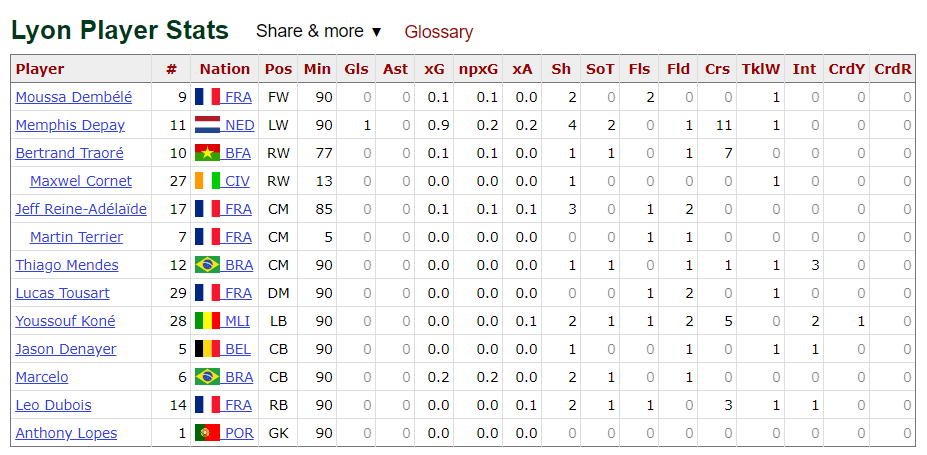
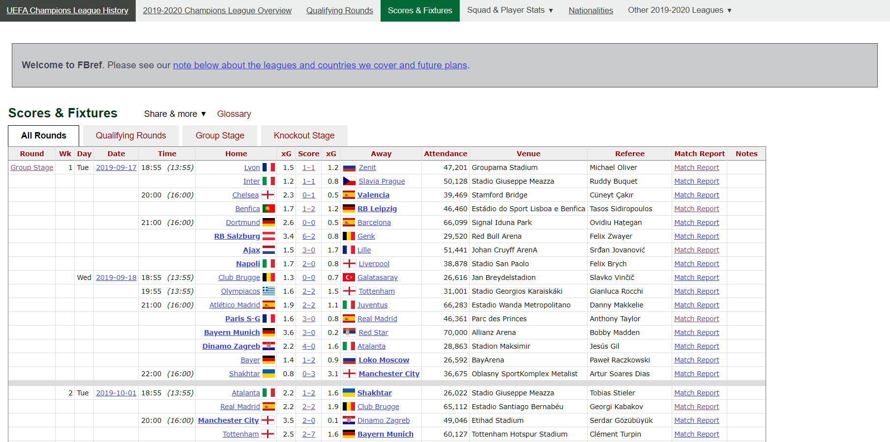
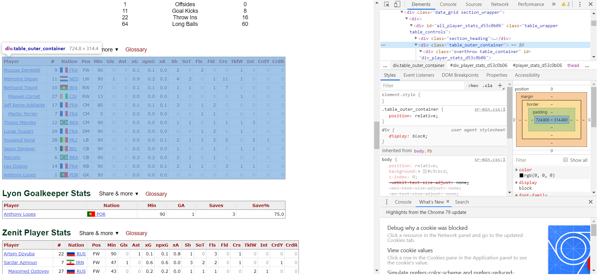
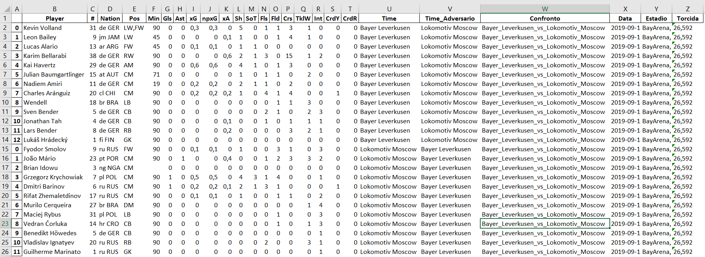

Automatizar tarefas não é um trabalho complexo nos dias atuais. Em grandes organizações existem ferramentas até mais robustas que envolvem a criação de "Robôs", por assim dizer, que conseguem automatizar a grande parte dos processos, como é o exemplo da UiPath.
Web scraping aborda essa questão, pois dessa forma é possível automatizar alguns processos de extração ou coleta de informações do local desejado, para posteriormente ser feita uma análise dos dados obtidos.
Mostrarei aqui uma aplicação dessa forma de mineração de dados. O objetivo, portanto, é coletar informações dos jogos de futebol da UEFA Champions League, tratá-las e criar uma base. Essas informações serão extraídas do Fbref. Neste site existe conteúdo sobre jogos, jogadores, público e várias outros detalhamentos. Vou estar programando em Python.
Entendendo o Problema
Pretendo possuir uma base dos jogos e jogadores da Champions League e que a alimentação da base seja viável a cada rodada. Para isso, terei que fazer a raspagem de duas páginas, uma página que leva a outra: Página 1 e Página 2
Como o projeto é, de certa forma, moroso, vou dividir em dois posts onde vou explicar com mais detalhes cada parte da extração e tratativa dos dados. Nesse post farei o web scraping da primeira página que contém os detalhes de cada partida, no segundo post farei da segunda página, que possui o link que leva ao detalhamento de cada partida e o resto do processo de mineração. Veja nas imagens abaixo as informações que cada página contém:

Página 1: Detalhamento por jogador
Página 2: A página que possui o link para a outra páginaComecemos então...
Mão na massa!
Nesse link deixarei o código completo a disposição. A parte referente a esse post é somente a Etapa 1.
Nessa etapa vou selecionar o local aonde quero capturar os dados, tratar algumas informações adicionais e salvar todas as planilhas em excel. A priori, utilizarei 2 bibliotecas.
#Importo as bibliotecas
import requests
from bs4 import BeautifulSoup
#faço a request
pg = 'https://fbref.com/'
url_pg = pg+'en/matches/d1dd1dea/Bayer-Leverkusen-Lokomotiv-Moscow-September-18-2019-UEFA-Champions-League'
req = requests.get(url_pg)
#pegando a base do site
content = req.content
soup = BeautifulSoup(content, 'html.parser')
A biblioteca Requests vai me proporcionar o carregamento da página, enquanto a Beautiful Soup vai me ajudar a entrar na parte da página que quero fazer a extração.
Agora volto na página 1 e identifico qual informação eu pretendo utilizar:

Página 1: Aonde está a informação?Utilizarei aqui outra biblioteca, chamada Pandas. Essa biblioteca auxiliará nas tratativas que serão feitas.
Agora a extração e a tratativa desse conteúdo irá começar.
#Importo as bibliotecas
import pandas as pd
table_geral = soup.find_all(class_ = "table_outer_container")
table_time_1 = table_geral[0]
table_time_2 = table_geral[2]
table_time_3 = soup.find(class_='venuetime')
table_torcida = soup.find_all('div',class_ = "scorebox_meta")
oi_torcida = str(table_torcida)
#Tratando as informações
toby = oi_torcida.split('<small>')
torcida = str(toby[2])
torcida = torcida.split('</small>')
torcida = str(torcida[0])
estadio = toby[4]
estadio = estadio.split('</small>')
estadio = str(estadio[0])
#conseguindo a data do jogo
data = table_time_3.get('data-venue-date')
#tratando o nome da planilha
nome = str(soup.title)
nome = nome.replace(" ","_")
nome = nome.replace("<title>","")
nome = nome.replace(".","")
nome_final = nome.split("Report")[0]
#retratando o nome final
nome_final = nome_final.split("_Match")
nome_final = nome_final[0]
#transformando a base do site em string e fazendo algumas tratativas
table_str_1 = str(table_time_1)
table_str_2 = str(table_time_2)
df_1 = pd.read_html(table_str_1)[0]
df_2 = pd.read_html(table_str_2)[0]
time = str(nome_final)
time = time.replace("_"," ")
time = time.split(" vs ")
time_1 = str(time[0])
time_2 = str(time[1])
#transformando em dataframe e adiocionando colunas
df_1 = pd.DataFrame(df_1)
df_1['Time'] = str(time_1)
df_1['Time_Adversario'] = str(time_2)
df_1['Confronto'] = str(nome_final)
df_1['Data'] = str(data)
df_1['Estadio'] = str(estadio)
df_1['Torcida'] = str(torcida)
df_2 = pd.DataFrame(df_2)
df_2['Time'] = str(time_2)
df_2['Time_Adversario'] = str(time_1)
df_2['Confronto'] = str(nome_final)
df_2['Data'] = str(data)
df_2['Estadio'] = str(estadio)
df_2['Torcida'] = str(torcida)
df_3 = df_1.append(df_2)
Nessa parte do código fiz diversos tratamentos nas extrações. Vamos aos detalhes:
Concluída esta etapa, resta agora colocar em uma planilha. Utilizarei outra blioteca (xlsxwriter) pra me ajudar nessa tarefa:
#Importo as bibliotecas
import xlsxwriter
#escrevendo em excelfile
writer = pd.ExcelWriter(nome_final+'.xlsx')
df_3.to_excel(writer,"Estatisticas")
writer.save()
Temos então nossa base do jogo com um alto nível de informações por jogador. No futuro conseguiremos "brincar" bastante e de diversas formas com essas informações.

Planilha finalNo próximo post estarei explorando mais deste tema!